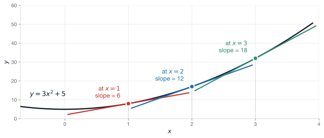
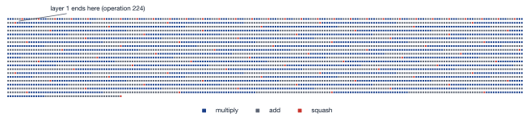

Lecture 3 — Three tools: linear algebra, calculus, and computation graphs
August 5, 2026
≈ 5 min · shout it out
A perceptron has w = 2 and b = -1. What is y when x = 3?
We stack three linear layers, with no activation functions. What family of functions can the stack represent — and why?
A perceptron takes three inputs. How many parameters does it have, counting the bias?
y = wx + b = (2 \times 3) - 1 = 6 - 1 = 5.
Still linear. A composition of linear maps is a linear map, so three stacked linear layers collapse into one. Depth buys nothing until we add activation functions.
Three weights plus one bias: 3 + 1 = 4 parameters.
A modern neural network operates on tensors with millions of entries. We need notation that scales — both for writing and for computing.
Every layer of a neural network is a matmul followed by a non-linear activation function applied element-wise.
Matrices aren’t that scary! Stacking survey into a data frame (n rows, k columns) gives you a matrix.
We’re largely dressing up familiar maths using new notation.
The smallest unit. Just numbers.
1, \ 1.5, \ -0.001, \ \pi
Combine them with arithmetic to make expressions:
y = \big((2 \times 3) + 5\big) \times 7 = 77
Or write the same thing as a function:
y = f(x) = (2x + 5) \times 7
A function is just a name for “input x, compute these steps, output y.”
Functions can be composed, i.e. f(x) = g(h(x)) where h(x) = 2x + 5 and g(z) = 7z.
Composition is the whole idea behind a deep network.
A 1-D ordered list of scalars. Two we’ll keep using:
\mathbf{a} = \begin{bmatrix} 1 \\ 2 \\ 3 \end{bmatrix}, \quad \mathbf{b} = \begin{bmatrix} 4 \\ 5 \\ 6 \end{bmatrix}
Addition / subtraction: element-wise, requires matching length.
\mathbf{a} + \mathbf{b} = \begin{bmatrix} 1+4 \\ 2+5 \\ 3+6 \end{bmatrix} = \begin{bmatrix} 5 \\ 7 \\ 9 \end{bmatrix}
Scalar multiplication: multiply every entry.
3 \, \mathbf{a} = \begin{bmatrix} 3 \\ 6 \\ 9 \end{bmatrix}
A survey-stats example
Rescaling everyone’s height from cm to m is scalar multiplication of the height column
A vector can be a column \begin{bmatrix} a_1 \\ a_2 \end{bmatrix} or a row \begin{bmatrix} a_1 & a_2 \end{bmatrix}.
The transpose (' or ^\mathsf{T}) swaps them:
\mathbf{a} = \begin{bmatrix} a_1 \\ a_2 \end{bmatrix} \ \Longleftrightarrow \ \mathbf{a}^\mathsf{T} = \begin{bmatrix} a_1 & a_2 \end{bmatrix}
Note
The transpose is only a re-orientation. The numbers don’t change. It exists so the operations later in this lecture line up dimension-wise.
A 2-D array of scalars. Two indices — row and column.
\mathbf{A} = \begin{bmatrix} 1 & 2 & 3 \\ 4 & 5 & 6 \\ 7 & 8 & 9 \end{bmatrix}
Addition is again element-wise:
\begin{bmatrix} 1 & 2 \\ 3 & 4 \end{bmatrix} - \begin{bmatrix} 5 & 6 \\ 7 & 8 \end{bmatrix} = \begin{bmatrix} -4 & -4 \\ -4 & -4 \end{bmatrix}
A weight matrix in a neural network is just a 2-D table of numbers, ordered by “which output node” and “which input feature”.
Row first, then column — always
We write a_{ij} for the entry in row i, column j:
\mathbf{A} = \begin{bmatrix} a_{11} & a_{12} & a_{13} \\ a_{21} & a_{22} & a_{23} \\ a_{31} & a_{32} & a_{33} \end{bmatrix} = \begin{bmatrix} 1 & 2 & 3 \\ 4 & 5 & 6 \\ 7 & 8 & 9 \end{bmatrix}
Single entries
A whole row
Fix i = 2:
\begin{bmatrix} 4 & 5 & 6 \end{bmatrix}
A whole column
Fix j = 2:
\begin{bmatrix} 2 \\ 5 \\ 8 \end{bmatrix}
a_{12} = 2 but a_{21} = 4 — different entries. Row always comes first, and this is the most common slip in the rest of this lecture.
Try What is a_{32}? And what shape is column 3?
Answer a_{32} = 8 — row 3, column 2. Column 3 is \begin{bmatrix} 3 \\ 6 \\ 9 \end{bmatrix}, a 3 \times 1 column vector.
Maths starts at 1
a_{11} is the top-left entry.
\mathbf{A} = \begin{bmatrix} 1 & 2 & 3 \\ 4 & 5 & 6 \\ 7 & 8 & 9 \end{bmatrix}
So a_{23} = 6.
Important
The order is the same — row, then column. Only the starting number differs: a_{ij} is A[i-1, j-1].
You met this in yesterday’s lab; you’ll use it every day from here on.
Swap rows and columns:
\mathbf{A} = \begin{bmatrix} a_{11} & a_{12} & a_{13} \\ a_{21} & a_{22} & a_{23} \end{bmatrix}, \quad \mathbf{A}^\mathsf{T} = \begin{bmatrix} a_{11} & a_{21} \\ a_{12} & a_{22} \\ a_{13} & a_{23} \end{bmatrix}
Try What is (\mathbf{A}^\mathsf{T})^\mathsf{T}?
Answer \mathbf{A}. Two transposes get you back where you started.
The most important operation we’ll see today
For two vectors \mathbf{a}, \mathbf{b} \in \mathbb{R}^n (same length!):
\mathbf{a} \cdot \mathbf{b} = \sum_{i=1}^n a_i b_i
A single number. Sometimes written \langle \mathbf{a}, \mathbf{b} \rangle or \mathbf{a}^\mathsf{T} \mathbf{b}.
Worked example. Let \mathbf{a} = \begin{bmatrix} 1 \\ 2 \\ 3 \end{bmatrix} and \mathbf{b} = \begin{bmatrix} 4 \\ 5 \\ 6 \end{bmatrix}.
\mathbf{a} \cdot \mathbf{b} = (1)(4) + (2)(5) + (3)(6) = 4 + 10 + 18 = 32
Why it matters.
A neuron’s pre-activation is \sum_i w_i x_i + b. That sum is a dot product \mathbf{w} \cdot \mathbf{x}.
Take \mathbf{A} \in \mathbb{R}^{n \times k} and \mathbf{B} \in \mathbb{R}^{k \times t}.
The product \mathbf{AB} is the n \times t matrix whose entry (i, j) is the dot product of row i of \mathbf{A} and column j of \mathbf{B}:
(\mathbf{AB})_{ij} = \sum_{\ell=1}^k A_{i\ell} \, B_{\ell j}
Dimension rule: the inner dimensions must match.
(\underbrace{n \times k}_{\mathbf{A}}) \cdot (\underbrace{k \times t}_{\mathbf{B}}) \longrightarrow (n \times t)
If they don’t match, the product is undefined.
\mathbf{A} = \begin{bmatrix} 1 & 2 \\ 3 & 4 \end{bmatrix}, \quad \mathbf{B} = \begin{bmatrix} 5 & 6 \\ 7 & 8 \end{bmatrix}
\mathbf{AB} = \begin{bmatrix} \underbrace{1 \cdot 5 + 2 \cdot 7}_{= 19} & \underbrace{1 \cdot 6 + 2 \cdot 8}_{= 22} \\ \underbrace{3 \cdot 5 + 4 \cdot 7}_{= 43} & \underbrace{3 \cdot 6 + 4 \cdot 8}_{= 50} \end{bmatrix} = \begin{bmatrix} 19 & 22 \\ 43 & 50 \end{bmatrix}
Two warnings.
\mathbf{AB} \neq \mathbf{BA}
Compute \mathbf{BA} for the above matrices by hand. You should get a different number than \mathbf{AB}. This mismatch is why we need transposes to keep things orderly.
Yesterday: a hidden layer of three nodes, each computing \sum_i w_i^{(h)} x_i + b^{(h)} for the same input \mathbf{x}.
Stack the per-node weights into a matrix \mathbf{W} \in \mathbb{R}^{h \times k} and biases into a vector \mathbf{b} \in \mathbb{R}^{1 \times h}. The entire layer’s pre-activation is:
\mathbf{x} \mathbf{W}^\mathsf{T} + \mathbf{b} \quad \in \mathbb{R}^{1 \times h}.
The transpose makes the inner dimensions match: (1 \times k) \cdot (k \times h) \to (1 \times h).
I.e. One output per h nodes
Suppose h = 2 (two hidden nodes) and k = 3 (three input features).
To compute \mathbf{x} \cdot \mathbf{W}^\mathsf{T} with \mathbf{x} a row vector of length 3, we need \mathbf{W}^\mathsf{T} of shape (3 \times 2).
Put it together:
\mathbf{W}^\mathsf{T} = \begin{bmatrix} w_1^{(1)} & w_1^{(2)} \\ w_2^{(1)} & w_2^{(2)} \\ w_3^{(1)} & w_3^{(2)} \end{bmatrix}
For a given \mathbf{x} = \begin{bmatrix} x_1 & x_2 & x_3 \end{bmatrix}, \quad\mathbf{x}\cdot\mathbf{W}^\mathsf{T} = \begin{bmatrix} \big(x_1 w_1^{(1)} + x_2 w_2^{(1)} + x_3 w_3^{(1)}\big) & \big(x_1 w_1^{(2)} + x_2 w_2^{(2)} + x_3 w_3^{(2)}\big) \end{bmatrix}
So we get a two-length row vector output (one value per neuron).
So far, one observation at a time. But, the labs feed many at once by stacking the observations as the rows of a matrix \mathbf{X}.
With 64 observations and our h = 2, k = 3 layer:
\mathbf{X}\mathbf{W}^\mathsf{T} is (64 \times 3)(3 \times 2) \to (64 \times 2)
The same matrix product, just done simultaneously
Notice, we still need to add the biases \mathbf{b}…
By the rules we wrote down earlier, the previous slide’s addition is undefined.
Yet, if we run it in Python, it works anyway.
numpy and PyTorch use on extra rule called broadcasting:
Suppose we have: (3 \times 2) + (1 \times 2). Reusing along a dimension means copying the object until the shapes match, then adding as normal:
\begin{bmatrix} 1 & 2 \\ 3 & 4 \\ 5 & 6 \end{bmatrix} + \begin{bmatrix} 10 & 20 \end{bmatrix} \;=\; \begin{bmatrix} 1 & 2 \\ 3 & 4 \\ 5 & 6 \end{bmatrix} + \underbrace{\begin{bmatrix} 10 & 20 \\ 10 & 20 \\ 10 & 20 \end{bmatrix}}_{\text{the re-use}} = \begin{bmatrix} 11 & 22 \\ 13 & 24 \\ 15 & 26 \end{bmatrix}
The middle version is ordinary same-shape addition — no new rules. Every row gets the same \begin{bmatrix} 10 & 20 \end{bmatrix}: one bias per node, reused for every observation. That is what \mathbf{X}\mathbf{W}^\mathsf{T} + \mathbf{b} means in code.
Broadcasting can stretch a column too. Take (3 \times 2) + (3 \times 1): from the right, 2 against 1 — so the 1 stretches across the columns; then 3 against 3 match.
\begin{bmatrix} 1 & 2 \\ 3 & 4 \\ 5 & 6 \end{bmatrix} + \begin{bmatrix} 10 \\ 20 \\ 30 \end{bmatrix} \;=\; \begin{bmatrix} 1 & 2 \\ 3 & 4 \\ 5 & 6 \end{bmatrix} + \underbrace{\begin{bmatrix} 10 & 10 \\ 20 & 20 \\ 30 & 30 \end{bmatrix}}_{\text{stretching}} = \begin{bmatrix} 11 & 12 \\ 23 & 24 \\ 35 & 36 \end{bmatrix}
One number per row, reused along that row.
The direction of the stretch follows the shape.
Tip
You have broadcast before. Standardising a data frame subtracts a (1 \times k) row of column means from an (n \times k) matrix — the same pattern as the bias.
Later, when we stack matrices to get 3-D tensors, we’ll have more complicated shapes like (64 \times 28 \times 28)
Suppose we subtract something dimensionally smaller like (28 \times 28). Broadcasting works even here:
(64, 28, 28)
(28, 28) → pad left with 1s → (1, 28, 28) → stretch → (64, 28, 28)When one shape is shorter, we pad it with 1s on the left, then line up from the right as before.
E.g. (2 \times 2 \times 2) + (2 \times 2):
\underbrace{\begin{bmatrix} 1 & 2 \\ 3 & 4 \end{bmatrix}, \ \begin{bmatrix} 5 & 6 \\ 7 & 8 \end{bmatrix}}_{\text{a stack of two matrices}} + \ \begin{bmatrix} 10 & 20 \\ 30 & 40 \end{bmatrix} = \ \begin{bmatrix} 11 & 22 \\ 33 & 44 \end{bmatrix}, \ \begin{bmatrix} 15 & 26 \\ 37 & 48 \end{bmatrix}
Each matrix in the stack gets the same (2 \times 2) added — as if we had written + \ \begin{bmatrix} 10 & 20 \\ 30 & 40 \end{bmatrix}, \ \begin{bmatrix} 10 & 20 \\ 30 & 40 \end{bmatrix}, one copy per layer.
Warning
The padding is only ever on the left. (64, 28, 28) + (64, 28) fails: from the right, 28 matches 28, then 28 hits 64. If you mean “one number per image” — say, dividing each image by its own maximum — the shape you want is (64 \times 1 \times 1). Broadcasting follows the same rules for every element-wise operation, not only addition.
Try it yourself For each pair of shapes, does the addition work — and if so, what shape comes out?
Answer 1. Works — a single number is compatible with every dimension. Shape (2 \times 3).
Works — from the right: 2 matches 2, then the 1 stretches over 64. Shape (64 \times 2). This is the layer bias.
Error — from the right: 2 against 64. A per-observation vector cannot be added this way. Reshape it to (64 \times 1) and it broadcasts across the columns instead.
Works — both stretch. Written out: \begin{bmatrix} 10 & 10 \\ 20 & 20 \\ 30 & 30 \end{bmatrix} + \begin{bmatrix} 1 & 2 \\ 1 & 2 \\ 1 & 2 \end{bmatrix} = \begin{bmatrix} 11 & 12 \\ 21 & 22 \\ 31 & 32 \end{bmatrix} — shape (3 \times 2), every pairwise sum.
We now know what a matrix product computes. How much work is it?
One entry of an (n \times m)(m \times p) product is a dot product of length m: m multiplications and m - 1 additions. Each multiply or add is one floating-point operation (a FLOP), so one entry costs about 2m FLOPs.
The output has n \times p entries:
\text{total cost} \approx n \times p \times 2m = 2nmp \ \text{FLOPs}
Worked example. A layer reading a 28 \times 28 pixel image (784 features) into 128 hidden nodes, for a batch of 64 images: \mathbf{X}\mathbf{W}^\mathsf{T} is (64 \times 784)(784 \times 128).
2 \times 64 \times 784 \times 128 = 12{,}845{,}056 \approx 13\text{M FLOPs}
… For one layer, of one forward pass.
The good news: none of that work has to happen in sequence.
Every entry of the output is independent of every other. Entry (i, j) needs row i of \mathbf{X} and column j of \mathbf{W}^\mathsf{T}.
A GPU (graphics card) is built for exactly this because it calls the same easy computation, over thousands of points at once.
Try it yourself The output layer maps those 128 hidden values to 10 classes, same batch of 64. How many FLOPs?
Answer 2 \times 64 \times 128 \times 10 = 163{,}840 FLOPs — about 78 times cheaper than the 784 → 128 layer.
≈ 10 min · pen and paper, in pairs
Five problems
For each, compute or say “undefined” (with a reason).
\begin{bmatrix} 1 & 2 \\ 3 & 4 \end{bmatrix} \begin{bmatrix} 5 \\ 6 \end{bmatrix} = \ ?
\begin{bmatrix} 1 & 0 \\ 0 & 1 \end{bmatrix} \begin{bmatrix} 7 & 8 \\ 9 & 10 \end{bmatrix} = \ ?
\begin{bmatrix} 1 & 2 & 3 \end{bmatrix} \begin{bmatrix} 4 \\ 5 \\ 6 \end{bmatrix} = \ ?
\begin{bmatrix} 1 \\ 2 \\ 3 \end{bmatrix} \begin{bmatrix} 4 & 5 \end{bmatrix} = \ ?
\begin{bmatrix} 1 & 2 \end{bmatrix} \begin{bmatrix} 3 \\ 4 \\ 5 \end{bmatrix} = \ ?
Five minutes. Then we’ll discuss together.
\begin{bmatrix} 17 \\ 39 \end{bmatrix}. A (2 \times 2) \cdot (2 \times 1) \to (2 \times 1) matrix-vector product. Think of it as two dot products stacked.
\begin{bmatrix} 7 & 8 \\ 9 & 10 \end{bmatrix}. The first matrix is the identity. Multiplying by it leaves the second matrix unchanged.
32. A row × column dot product. Single number.
\begin{bmatrix} 4 & 5 \\ 8 & 10 \\ 12 & 15 \end{bmatrix}. A column × row — the outer product. Gives a matrix, not a scalar.
Undefined. Inner dimensions 2 \neq 3 — can’t do it.
Tip
The most common error in deep learning code is a shape mismatch. PyTorch raises a clear error when this happens. Train your eye now — and you’ll save hours later.
Tomorrow, for any parameter w in our model, we will want to know:
If I nudge w slightly, does the loss go up or down — and by how much?
This information is a derivative.
You’ll have seen derivatives before.
We’re going to re-introduce them with two restrictions:
For y = f(x), the derivative \dfrac{dy}{dx} is the slope of f at point x.
For y = ax^b + c (where a, b, c are scalars): \frac{dy}{dx} = b \cdot a \, x^{b-1}
Worked example.
y = 3x^2 + 5.
\dfrac{dy}{dx} = 6x.
At x = 1: slope = 6. At x = 2: slope = 12. At x = 0: slope = 0 (local minimum!).
The same worked example, drawn: y = 3x^2 + 5

The tangent is the straight line that just touches the curve at that point. Its steepness is the derivative there — so \frac{dy}{dx} = 6x is a formula for the slope at every x, not one number. Steeper curve → bigger derivative.
Note
You will not be asked to derive these. You will be asked to use them — both in this course and in the lab tomorrow.
What about y = (2x + 3)^2?
You could expand to y = 4x^2 + 12x + 9 and apply the power rule: \frac{dy}{dx} = 8x + 12.
But what if expanding is messy — or impossible? We need a mechanical rule that doesn’t depend on cleverness.
That rule is the chain rule.
For y = f(g(x)) — a function inside a function — define u = g(x) so y = f(u). Then:
\frac{dy}{dx} = \frac{dy}{du} \cdot \frac{du}{dx}
Worked example — y = (2x + 3)^2.
Same answer, mechanically.
The intuition. A small change in x propagates first through the inner function (u changes a little) and then through the outer function (y changes because u changed).
We want to know what the change through g and f is so we multiply the two rates together.
For y = f_n( f_{n-1}( \cdots f_1(x) \cdots )) — a chain of n functions:
\frac{dy}{dx} = \frac{dy}{du_{n-1}} \cdot \frac{du_{n-1}}{du_{n-2}} \cdots \frac{du_1}{dx}
Each piece is a small, easy derivative. Multiply them. Done.
This is the deepest reason deep learning works: any reasonable composition of operations can be differentiated one operation at a time, then assembled.
Take a function with three nested operations:
y = \left( \tfrac{1}{n} (a - x)^2 \right)^{1/2}
Decompose:
Apply the chain rule:
\frac{dy}{dx} = \underbrace{\frac{d}{du_1}\!\left[\left(\tfrac{u_1}{n}\right)^{1/2}\right]}_{\text{outer}} \cdot \underbrace{\frac{d}{du_2} [u_2^2]}_{\text{middle}} \cdot \underbrace{\frac{d}{dx} [a - x]}_{\text{inner}}
Three small derivatives. We don’t even need to expand y to do this.
For a function of several variables, e.g. y = f(a, b) = 3 a^2 + 2 b + 1:
Compute partial derivatives — treat the other vars as constants: \frac{\partial y}{\partial a} = 6 a, \qquad \frac{\partial y}{\partial b} = 2
Collect them into a gradient vector: \nabla f = \begin{bmatrix} \frac{\partial y}{\partial x_1} \\ \frac{\partial y}{\partial x_2} \end{bmatrix} = \begin{bmatrix} 6 x_1 \\ 2 \end{bmatrix}
Why we care.
For a neural network with millions of weights, the loss is a function L(\mathbf{W}) from “all the weights” to “a single number”.
The gradient \nabla L is a vector of the same size as \mathbf{W} — one entry per weight. It tells us, for each weight, how the loss changes.
That is the thing we minimise tomorrow.
Suppose a computer cannot differentiate a function. Can we approximate the derivative?
The derivative asks how much would the output change if we adjust an input by a tiny interval.
So, empirically, we can take a small step \varepsilon either side of x and measure that change:
f'(x) \approx \frac{f(x + \varepsilon) - f(x - \varepsilon)}{2\varepsilon}
This is called the central difference. It is the empirical evaluation of a gradient at a given point.
Worked example. Suppose f(x) = x^2, and we evaluate at x = 3.
With \varepsilon = 0.01:
\frac{f(3.01) - f(2.99)}{0.02} = \frac{9.0601 - 8.9401}{0.02} = \frac{0.1200}{0.02} = 6.0000
Formally, we know f'(x) = 2x, so f'(3) = 6 – they match!
The cheat-sheet claims \sigma'(x) = \sigma(x)(1 - \sigma(x)). We took that on trust. Now we can check it.
Try it yourself Estimate \sigma'(0) with the central difference and \varepsilon = 0.01.
To 4 d.p.: \sigma(0.01) = 0.5025 and \sigma(-0.01) = 0.4975.
Answer \sigma'(0) \approx \frac{0.5025 - 0.4975}{0.02} = \frac{0.0050}{0.02} = 0.25
The rule agrees: \sigma(0) = \tfrac{1}{1 + e^{0}} = 0.5, so \sigma'(0) = 0.5 \times 0.5 = 0.25.
The central difference has one flaw that rules it out for training, but is useful for testing calculations.
It’s far too slow
Why it’s still useful
Autograd libraries use central difference to test themselves
If our chain-rule code is wrong, gradient checking flags it
We can calculate entire network gradients with 1 forward and 1 backward pass
We’ll see this tomorrow!
≈ 8 min · pen and paper
For each y, find \dfrac{dy}{dx} — using the chain rule, without expanding.
y = (3x + 1)^4
y = e^{2x + 5}
y = \ln(x^2 + 1)
y = \sigma(3x) where \sigma(z) = \tfrac{1}{1 + e^{-z}}
y = (a - x)^2 — find \dfrac{dy}{dx}, treating a as a constant.
\dfrac{dy}{dx} = 4(3x+1)^3 \cdot 3 = 12(3x+1)^3.
\dfrac{dy}{dx} = e^{2x+5} \cdot 2 = 2 e^{2x+5}.
\dfrac{dy}{dx} = \dfrac{1}{x^2+1} \cdot 2x = \dfrac{2x}{x^2 + 1}.
\dfrac{dy}{dx} = \sigma(3x)(1 - \sigma(3x)) \cdot 3.
\dfrac{dy}{dx} = 2(a - x) \cdot (-1) = -2(a - x).
Take f(x) = 4(2x + 3) - 5. It has:
Draw it as a graph — left-to-right, with operations as circles and values as boxes:
A computational graph is just a flow chart for a calculation. Each node either holds a value or performs an operation. Edges show the order of operations.
Value nodes
Operation nodes
We use directed acyclic graphs (DAGs) — no operation’s output ever flows back to an earlier node.
Acyclic — what we use
Cyclic — pathological for plain neural nets
Note
We will see cycles later — recurrent networks on Day 9, where the same operation is reused across time steps. But each unrolled time-step is still a DAG.
Social-science graphs
A computational graph is structurally identical to:
The shared idea: a calculation is a structure of operations on values.
The structure itself carries information, by telling us what depends on what, what we can compute first, and what to differentiate with respect to what.
Yesterday’s linear perceptron y = wx + b becomes:
(With an activation function \sigma added between the + and the output, you’d insert one more node — same picture, one more step.)
Every node has a local derivative we can compute.
Using the cheat-sheet from earlier, we can assign the form of these derivatives when we build the graph, to save compute.
Yesterday’s two-layer network was: \hat{y} = \sigma\Big( \sigma\big(\mathbf{x}\,\mathbf{W}^{(1)\mathsf T} + \mathbf{b}^{(1)}\big) \,\mathbf{w}^{(2)\mathsf T} + b^{(2)} \Big)
Build it one operation at a time — watch the node count
We multiply, add, “squash”, twice. What grows is the tracking: three operations per layer, and every one needs its own local derivative.
In Labs 3–4 you build exactly this, where every single arithmetic operation becomes a node in your Value graph. A tiny network makes a surprisingly big graph — and that is precisely why we let the computer walk it for us.
This is still a tiny deep learning model:
To make it fit, one dot represents a multiply, add, or squash, in running order.

For one prediction:
For context, a forward pass of GPT-3 requires about 350 billion floating point operations.
The graph itself is not numbered.
A list built this way is called a topological order of the graph.
Two things worth noticing:
The order is not unique. Layer 1 can run the multiplications in any order
The heap only clears because the graph is acyclic.
Forward pass
Backward pass
Tip
This is what frameworks (PyTorch, JAX, TensorFlow) automate. Tomorrow you’ll write a tiny version of it yourself, in Python.
Where you are at the end of Day 3
You can now:
What we don’t have:
Tip
You have all three tools. Tomorrow we put them together.
Goals
In Python, build a small computational graph library from scratch.
You will implement:
Value class that stores data, grad, and a list of “child” values.__add__, __mul__, and __pow__ that build a graph as you do arithmetic.c = a * b + 1 for Values a, b, and verify the graph has the right structure.Deliverable. A working Value class. We will add gradient computation to it in the following lab, which turns this library into a fully-working autodiff system.
This comes from Andrej Karpathy’s micrograd scripts.
Lecture 4 — Backpropagation
If you want a head start: skim Karpathy’s micrograd GitHub README tonight. No need to read the implementation yet as we’ll write it together tomorrow.
ME324 · AI and Deep Learning · LSE Summer School